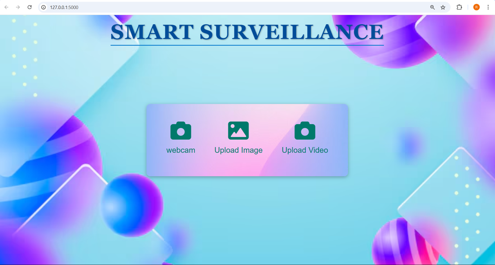

Smart Surveillance System
The "Smart Surveillance" system utilizes YOLOv5 to detect harmful objects (e.g., weapons) in real-time via video or image input. It provides live monitoring, file uploads, and automatic alarms for immediate security. A cost-effective, sensor-free solution that enhances safety in homes, workplaces, and public spaces.
